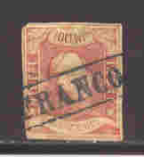
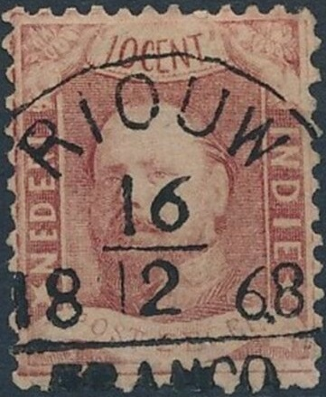
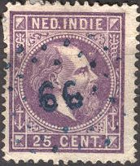
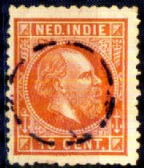
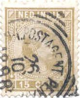

(Halfround Franco cancel, reduced size)
Return To Catalogue - 1864-1900 issues - Netherlands - Postage due stamps (Te betalen port) - Indonesia
Note: on my website many of the
pictures can not be seen! They are of course present in the
catalogue;
contact me if you want to purchase it.
From 1864 to 1866 all postoffices used the 'FRANCO' in a box cancel.

In 1866 the halfround franco cancel was introduced with a city name, secondary post offices still used the 'FRANCO' in a box cancel (upto about 1890).
(Halfround Franco cancel, reduced size)

"RIOUW" cancel (present day Riau)
About 1872 fully round cancels were introduced. Due to the fact that these cancels could easily be removed from the stamps, and the stamps reused, numeral cancels with dots were introduced in 1874 and used up to 1893. Even the first two stamps (1864-1865) exist with numeral cancels (rare).

A list of the towns corresponding to the numerals is given below (this list can also be found in: Speciale Postzegelcatalogus 1996 issued by 'De Nederlandse Vereeniging van Postzegelhandelaren', 1995 or on http://www.cwiakala.com/numerical.cancel.html ). More info can also be found on http://www.puntstempels.nl/. The numeral cancels 1 to 72 were allocated to specific towns according to an official document (Gouvernementsverslag). But the origin of the numerals 73 to 120 was initially unknown (see http://home.tiscali.nl/hanskruse/postzegels/poststukken/bulttekst.pdf). Numeral cancels were used on all postoffices from 1st April 1874 onwards to 14th April 1893. Thirteen offices received numeral cancels earlier for trial purposes. The numbers after 72 were provided when new postoffices opened until the last one '120' was opened on 1st April 1891. After the official 'last date' of 14th April 1893, some cancels remained in use for a short period. The official color of the cancels was black, although other colors exist (violet, green). Secondary post offices cancelled the stamps with their own canceller (a straight line with the town name or 'FRANCO'), the main postoffice then later cancelled it once more with its numeral cancel. The material of which these cancels were made was not very good, such that many of them are worn out (especially for the more common ones). Many of these cancels seem to be quite rare.
1 Weltevreden (2 types, different
size)
2 Samarang (2 types, different size)
3 Soerbaja (2 types, different size)
4 Batavia (2 types, different size)
5 Padang (2 types, different size)
6 Cheribon (2 types, different size)
7 Soerakarta (2 types, different size)
8 Buitenzorg (2 types, different size)
9 Makassar (2 types, different size)
10 Djokjakarta (2 types, different size, exists in blue)
11 Passoeroean
12 Bandoeng (exists in blue)
13 Tegal (exists in blue)
14 Pekalongan
15 Salatiga
16 Ambarawa
17 Pati
18 Rembang
19 Toeban
20 Banjoemas
21 Tjilatjap (exists in blue)
22 Poerworedjo
23 Magelang
24 Madioen
25 Grissee (exists in blue)
26 Probolingo
27 Besoeki
28 Banjoewangi (exists in blue)
29 Kediri
30 Pamekasan
31 Bandjermasin
32 Palembang
33 Amboina
34 Riouw (to 1878), Tandjongpinang (from 1878)
35 Muntok
36 Pontianak
37 Serang
38 Anjer
39 Poerwakarta
40 Meester Cornelis (exists in blue)
41 Tjiandjoer
42 Soemedang
43 Indramajoe
44 Yjiamis
45 Kendal
46 Koedoes
47 Bodjonegoro
48 Klaten (exists in blue)
49 Ngawi
50 Patjitan
51 Modjokerto
52 Malang
53 Sitoebondo
54 Soemenep
55 Fort de Kock (exists in blue)
56 Sibogha (exists in blue)
57 Benkoelen (exists in blue)
58 Telok Betong
59 Bengkalis
60 Billiton (1874-1878), Tandjong Pandan (1878 onwards; exists in
blue)
61 Singkawang, Poerwodadi (after 5 Apr 1880)
62 Menado; exist in violet
63 Ternate
64 Banda, Neira (after 1878)
65 Timor (to 1893), Koepang (later)
66 Atjeh, 1st Brigade, (Atjeh fieldpost office), Kotta-radja
(1880 onwards)
67 Atjeh, 2nd Brigade, (Atjeh fieldpost office), Oenarang (1875
onwards)
68 Atjeh, 3rd Brigade, (Atjeh fieldpost office), Padang Pandjang
(1875 onwards)
69 Demak (to 1879), Steamship Mail Service, Batavia-Singapore
Route (1879-1880)
70 Blitar
71 Loemadjang
72 Bondowoso
73 Bojolali (1874-1875)
74 Kottaboemi (1874-1875, very rare, forgeries exist)
75 Moeara Doea (1874-1875)
76 Tebingtinggi (Palembang) (1874-1875); exists in blue
77 Lahat (1874-1875); exists in blue
78 Sebiat (1874-1875); exists in blue
79 Mokko Mokko (1874-1875)
80 Indrapoera (1874-1875)
81 Rau (1876-1890, exists in blue), Loeboe Sikaping (1890
onwards)
82 Padang Sidempoean (1874-1875); exists in blue
83 Singkel (1874-1875); exists in blue
84 Deli (to 5 Jan 1876), Laboean Deli (after 21 Dec 1876)
85 Sidoardjo (5 Jan 1876); exists in blue
86 Japara (5 Jan 1876)
87 Toeloengagoeng (5 Jan 1876)
88 Rorontalo (5 Jan 1876)
89 Singapore Postal Agency; N.I. Postagent Singapore (5 Jan 1876)
90 Penang Postal Agency; N.I. Postagent Penang (5 Jan 1876); this
cancel also exists in violet (1882) and blue (1888-89)
91 Soekaboemi (5 Jan 1876)
92 Bandjarnegara (between 21 Dec 1876 and 1 Nov 1878)
93 Djember (between 21 Dec 1876 and 1 Nov 1878)
94 Djoewana (between 21 Dec 1876 and 1 Nov 1878); exists in blue
95 Kraksaän
96 Karanganjar (used after 1882?)
97 Ponorogo
98 Temanggoeng
99 Wonosobo
100 Langkat (1879), Bangil (after 1880, exists in blue)
101 Baros
102 Garoet (30 Dec 1880)
103 Krawang (30 Dec 1880)
104 Soebang (1881)
105 Oleh-leh (12 Jul 1882); exists in violet and blue
106 Edi (12 Jul 1882); exists in violet
107 Telok Semawé (12 Jul 1882), Keboemen (after 1885)
108 Medan (12 Jul 1882)
109 Wlingi (12 Jul 1882)
110 Djombang (12 Jul 1882)
111 Kalianda
112 Goenoeng Toewa (between 1881-1887)
113 Bandar Klipan (to 1890), Tebing Tinggi Deli (later)
114 Rantau Prapat (between 1881-1887, very rare, forgeries exist)
115 Tandjong Balei (exists in violet)
116 Boeleleng (small numerals), Gombong (large numerals,15 Mar
1890); two towns used the same number!
117 Bindjei (small numerals, 1 Sep 1890), Bangkalan (large
numerals); two towns used the same number!
118 Tandjong Poera (1 Sep 1890); exists in violet.
119 Lasem (1 Apr 1891)
120 Toeren (1 Apr 1891)
I have seen a cancel of Netherlands Indies on a Straits Settlements stamp, number in a diamond of dots, nr.5: Padang, it can be found on Cd1. Sporadically, numeral cancels of Netherlands Indies can also be found on stamps of the Philippines and Great Britain. Numerical cancels of The Netherlands can also be found occasionally on stamps of Nethelands Indies (for example Amsterdam, nr. 5).
Literature: De Postzak, September 1987, nr. 153, 'De puntstempels van Nederlands-Indie' by P.R. Bulterman; http://home.tiscali.nl/hanskruse/postzegels/poststukken/bulttekst.pdf (in Dutch).


In 1885 the post office of Weltevreden used a broken circular cancel (empty center). This cancel was used temporary due to a lack of a normal numeral cancel, although I have also seen it offered as an experimental cancel on Ebay.
In 1893 square cancels (vierkantstempel) with date were introduced. They consist of a central circle with some circular parts added to make it look like a square.

A forged cancel used by the forger Fournier 'BAJOENGLENTJIR 29 6
1886', as can be found in 'The Fournier Album of Philatelic
Forgeries' listed under cancels of Hamburg. This cancel was used
on postage due forgeries.
A genuine cancel of Bajoenglentjir.
Fournier also made the forged cancels 'WELTEVREDEN 6 7 1890' and 'PALEMBANG 30 7 1886' both in the above type. I've seen the Palembang cancel on forged postage due stamps.
The Weltevreden and Palembang forged Fournier cancels, pictures
taken from a 'Fournier Album of Philatelic Forgeries'.
A list of square cancels (with location indicated
in brackets, other towns might exist):
Ambarawa (middle Java)
Amboina (Moluccas)
Ampenan (Lombok)
Banda-Neira
Bandjermasin (Borneo)
Bandoeng (West Java)
Bangkalan (Madura)
Bangil (East Java)
Banjoemas (Central Java)
Banjoewangi (East Java)
Batavia (West Java)
Belawan (North Sumatra)
Besoeki (East Java)
Billiton
Bindjei (North Sumatra)
Blitar (East Java)
Blora (Central Java)
Bodjonegoro (East Java)
Bondowoso (East Java)
Buitenzorg (West Java)
Cheribon (West Java)
Demak (Central Java)
Djember (East Java)
Djoewana (Central Java)
Djokjakarta
Djombang (East Java)
Fort de Kock (Central Sumatra)
Garoet (West Java)
Gorontalo (Celebes)
Indramajoe (West Java)
Karanganjar (Central Java)
Kediri (East Java)
Kendal (Central Java)
Klaten (Central Java)
Kotta-Radja (Atjeh)
Kraksaan (East Java)
Laboean-Deli (North Sumatra)
Loemadjan (East Java)
Madioen (East Java)
Magelang (Central Java)
Makasser (Celebes)
Malang (East Java)
Medan (North Sumatra)
Meester Cornelis (West Java)
Menado (Celebes)
Modjokerto (East Java)
Ngawi (East Java)
Olehleh
Padang (Central Sumatra)
Padangpandjang (Central Sumatra)
Padangsidempoean (North Sumatra)
Pajakombo (Central Sumatra)
Palembang (South Sumatra)
Pamekasan (Madura)
Pangkalanbrandan (North Sumatra)
Pasoeroean (East Java)
Pati (Central Java)
Pekalongah (Central Java)
Poerwakarta (West Java)
Poerwodadi (Central Java)
Poerworedjo (Central Java)
Ponorogo (East Java)
Probolinggo (East Java)
Riouw (Riao)
Salatiga (Central Java)
Samarinda (Borneo)
Semarang (Central Java)
Serang (West Java)
Siboga (North Sumatra)
Sitoebondo (East Java)
Soekaboemi (West Java)
Soemedang (West Java)
Soemenep (Madura)
Soerabaja (East Java)
Soerakarta (Central Java)
Tandjoengbalei (North Sumatra)
Tandjongpriok (West Java)
Tebingtinggi-Deli (North Sumatra)
Tegal (Central Sumatra)
Tanggoeng (Central Java)
Tandjoer (Java)
Tjilatjap (Central Java)
Tjimahi (West Java)
Toeban (East Java)
Toeloengagoeng (East Java)
Toeren
Weltevreden (West Java)
Wlingi (East Java)
Wonosobo (Central Java)
{kind=link}